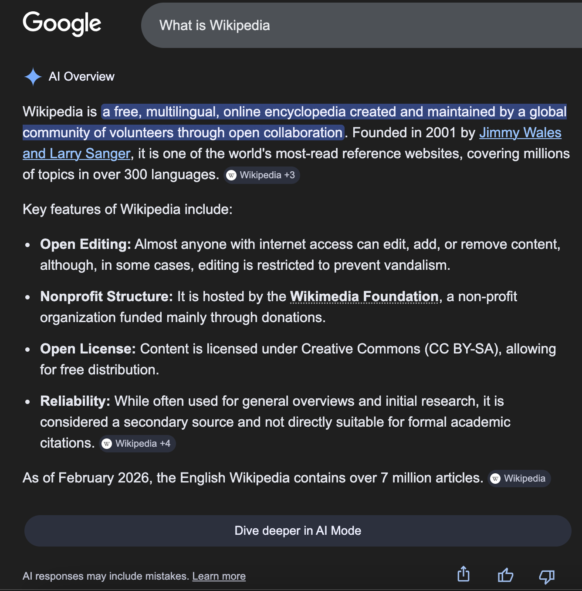

O que é GEO e como preparar seu site para buscas com IA
A busca mudou de função. Antes, a meta era aparecer em uma lista. Agora, a disputa também acontece antes do clique.

A busca mudou de função. Antes, a meta era aparecer em uma lista. Agora, a disputa também acontece antes do clique: em respostas sintetizadas, comparações automáticas e recomendações geradas por IA.
Isso muda o critério de qualidade do site. Não basta ranquear. Agora ele precisa ser entendido, citado e recuperado com facilidade.
É nesse ponto que GEO deixa de ser tendência e passa a ser disciplina.
1. O que mudou na busca
GEO, ou Generative Engine Optimization, é a prática de organizar um site e seu conteúdo para aumentar a chance de ele ser usado por motores generativos.
O ponto principal não é o nome novo. O ponto principal é a mudança de comportamento da busca.
Ferramentas com IA não se limitam a devolver links. Elas resumem, comparam, explicam e filtram. Isso favorece páginas que deixam claro:
- quem a empresa é
- o que ela faz
- para quem ela faz
- por que merece confiança
- qual resposta oferece com mais nitidez do que as alternativas
Se o site não resolve essas perguntas, ele pode até existir, mas fica frágil para esse novo tipo de mediação.
2. Por que GEO não substitui SEO
Esse é o primeiro erro comum: tratar GEO como se fosse uma substituição de SEO. Não é.
SEO ainda sustenta descoberta, demanda e autoridade. GEO adiciona uma camada nova: clareza de entidade, extração fácil e prova visível.
Em outras palavras:
- SEO ajuda a ser encontrado
- GEO ajuda a ser entendido e reutilizado
Quando os dois trabalham juntos, o site fica mais forte em duas frentes ao mesmo tempo. Quando o site depende só de SEO, ele pode aparecer, mas ainda assim ser pouco citável.
3. O que motores generativos tendem a citar
Sistemas generativos tendem a favorecer conteúdos que oferecem sinais limpos e confiáveis. Na prática, isso inclui:
- definições claras
- respostas diretas logo no início
- blocos curtos e escaneáveis
- prova pública
- contexto nomeado
- FAQ
- autoria e data
Isso vale porque a IA gosta do que é fácil de extrair. E o leitor humano também.
A diferença é que a IA não tolera bem ambiguidade estrutural. Se a página tenta dizer tudo ao mesmo tempo, ela perde força como fonte de resposta.
4. O que um site precisa para ser mais citável
Para um site ser mais citável, ele precisa parar de parecer uma coleção de textos soltos. Ele precisa parecer uma entidade clara.
O mínimo que o site deve responder sem rodeio é:
- Quem a empresa é
- O que ela faz
- Para quem ela faz
- Por que confiar
- O que fazer depois da leitura
Se essas respostas não aparecem com clareza na home e nas páginas de serviço, o blog fica sustentado por uma base fraca.
E aqui está a parte mais importante: o blog não compensa um site confuso. Ele amplifica o que já existe.
5. Onde a maioria dos sites falha
Na prática, a maioria dos sites fracassa nos mesmos pontos:
- home genérica
- serviços descritos em linguagem abstrata
- pouca prova pública
- FAQ ausente
- títulos vagos
- promessas amplas demais
Esses sinais fazem o site parecer substituível. Quando isso acontece, o texto pode ser correto, mas ainda assim soar vazio.
O problema não é só de copy. É de arquitetura de informação.
6. Como preparar o site sem recomeçar do zero
O caminho mais inteligente não é refazer tudo de uma vez. É melhorar as partes que sustentam o resto.
Home
A home precisa dizer, em uma frase, quem a empresa é e qual problema resolve. Sem floreio. Sem institucional vazio.
Serviços
Cada serviço deve deixar claro:
- objetivo
- processo
- diferencial
- prova
- CTA
Quanto mais explícito for o serviço, mais fácil ele fica de citar e de entender.
Prova
Cases, depoimentos, resultados, exemplos e capturas documentadas reduzem ambiguidade. Prova não precisa parecer publicidade. Precisa parecer real.
FAQ
FAQ não serve só para SEO. Ele ajuda a transformar dúvidas comuns em respostas curtas, reutilizáveis e diretas.
Estrutura
Títulos descritivos, listas, resumos e blocos de apoio melhoram tanto a leitura humana quanto a recuperação automática.
Schema
Quando fizer sentido, use Organization, WebSite, Article e FAQPage. Schema não salva conteúdo fraco, mas reforça conteúdo já bem construído.
7. O papel do blog nisso tudo
O blog não deve ser um depósito de posts. Ele deve ser um sistema de clareza.
Um bom artigo:
- abre com tese
- entrega contexto rápido
- desenvolve contraste
- mostra prova ou limite
- fecha com aplicação prática
Quando o artigo faz isso bem, ele deixa de ser texto de enchimento e vira ativo editorial.
Esse é o ponto em que o GEO ganha densidade. Não porque o texto usa a palavra GEO. Mas porque ele organiza a página de um jeito que facilita leitura, citação e recuperação.
8. Como aplicar isso ao seu site
O ponto não é publicar mais por publicar. É fortalecer a entidade do site e usar o blog como suporte de autoridade.
O caminho recomendado é:
- organizar a home
- reforçar páginas de serviço
- publicar o cluster editorial
- conectar os artigos a oferta
Assim o blog deixa de ser um conjunto de posts soltos e passa a sustentar o posicionamento da marca.
9. O que não confundir aqui
GEO não é:
- um rebranding de SEO
- uma desculpa para repetir palavras-chave
- uma coleção de boas práticas soltas
- um atalho para autoridade sem prova
GEO é uma exigência de clareza pública. Quanto melhor a marca explica quem é, o que faz e por que merece confiança, mais pronta ela fica para esse novo ambiente de busca.
10. Checklist mínimo antes de publicar
Antes de tratar uma página como GEO-ready, vale testar quatro perguntas simples.
- A página diz claramente o que a empresa faz?
- A prova aparece sem exigir interpretação demais?
- O texto pode ser resumido em poucas frases sem perder a tese?
- A estrutura ajuda tanto o leitor quanto um sistema generativo a extrair a resposta?
Se a resposta para qualquer uma dessas perguntas for fraca, o problema não é de algoritmo. O problema é de clareza editorial.
GEO deve ser tratado como uma melhoria de base, não como um truque de otimização. Quando a base melhora, o resto da descoberta melhora junto.
Esse filtro simples ajuda a separar sinal real de texto decorativo antes de escalar o conteúdo.
FAQ
GEO substitui SEO?
Não. GEO complementa SEO.
Preciso refazer o site inteiro?
Não necessariamente. Home, serviços e prova costumam gerar os primeiros ganhos.
Um blog ajuda GEO?
Sim, desde que o blog tenha estrutura, autoria, fonte e conexão com a entidade do site.
A imagem ajuda GEO?
Ajuda quando reforça a tese, a prova ou a clareza do artigo.
Fechamento
GEO não é um novo atalho para conteúdo. É uma disciplina de clareza, entidade e prova.
Se o site já explica bem quem você é, o que vende e por que confiar, ele fica muito mais pronto para ser usado por humanos e por sistemas generativos.